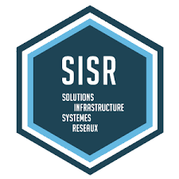

Le BTS SIO option SLAM (Solutions Logicielles et Applications Métiers) vous prépare à la mise en place de solutions informatiques au sein des entreprises, en vue de gérer efficacement un parc informatique complet
Le BTS SIO SISR (Solution d'Infrastructure Système et Réseau), est une option du BTS SIO qui a pour but de former des techniciens réseau polyvalents. Les lauréats de ce programme ont toutes les compétences nécessaires pour la gestion et la maintenance du réseau d'une entreprise
| SLAM | |
| SISR |  |